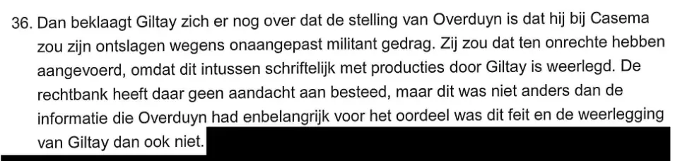

Bewijsstuk · Processtuk
Memorie van antwoord van Overduyn aan het Gerechtshof Den Haag, 2 februari 2016
De passage
“36. Dan beklaagt Giltay zich er nog over dat de stelling van Overduyn is dat hij bij Casema zou zijn ontslagen wegens onaangepast militant gedrag. Zij zou dat ten onrechte hebben aangevoerd, omdat dit intussen schriftelijk met producties door Giltay is weerlegd. De rechtbank heeft daar geen aandacht aan besteed, maar dit was niet anders dan de informatie die Overduyn had enbelangrijk voor het oordeel was dit feit en de weerlegging van Giltay dan ook niet.” Pagina 11 van de memorie, randnummer 36, de tweede pagina van dit uittreksel. Het document zelf schrijft twee woorden aaneen als “enbelangrijk”, voor “en belangrijk”. De rest van beide pagina’s is zwartgelakt, zodat alleen het briefhoofd en randnummer 36 zichtbaar zijn.

Waarom dit document telt
Overduyn was de hoofdgetuige van het ministerie tegen Giltay, en haar bewering dat hij als uitzendkracht via Randstad bij Casema zou zijn ontslagen wegens “irritant en onaangepast gedrag” werd het standpunt van de minister in het openbare rapport van de Nationale ombudsman uit 1999. In deze memorie van antwoord, zeventien jaar later, geeft haar advocaat Giltays grief weer en laat hij de kern ervan onbestreden.
De bijzin “omdat dit intussen schriftelijk met producties door Giltay is weerlegd” staat in de aantonende wijs, niet als “zou zijn weerlegd” of “volgens Giltay”, en in de zin erna spreekt de memorie zelf van “de weerlegging van Giltay”. Het verweer luidt niet dat de bewering klopte, maar: “dit was niet anders dan de informatie die Overduyn had”, met daarbij de stelling dat feit en weerlegging voor het oordeel niet belangrijk waren. Naar Nederlands procesrecht is dat beslissend: wat de ene partij stelt en de andere niet of onvoldoende betwist, moet de rechter als vaststaand beschouwen (artikel 149 Rv). In deze procedure stond daarmee vast dat de ontslagbewering was weerlegd. Het citaat in de stemmensectie vat dat samen als “laat na 17 jaar onweersproken”. Het ministerie heeft de kwalificatie van Giltay in het ombudsmanrapport nooit ingetrokken.
Herkomst
- Document
- Memorie van antwoord in hoger beroep, uittreksel
- Instantie
- Gerechtshof Den Haag
- Ingediend voor
- Barbara Overduyn, wonende te Zoetermeer, geïntimeerde
- Tegen
- Edwin Franciscus Giltay, wonende te Den Haag, appellant
- Advocaten
- R.F. Thunnissen, STV Mahieu advocaten en mediators, voor Overduyn; J.G.J. van Groenendaal voor Giltay
- Zitting
- 2 februari 2016
- Zaaknummer
- Rolnr. 200183987
- Taal
- Nederlands
- Pagina’s
- Pagina’s 1 en 11 van 15; de overige tekst op beide pagina’s is zwartgelakt
- Berust bij
- Archief van de auteur
- Zie ook
- Intern onderzoek voor de chef-staf MID, 12 februari 1999Rapport 1999/507 van de Nationale ombudsman, 17 december 1999Appeldagvaarding van Giltay tegen Barbara Overduyn, 8 januari 2016
Aangehaald in:
- het essay ‘Het verbod viel, het boek bleef overeind’ in de hoofdstukken (3) ‘Wat het boek onthult: de Srebrenica-doofpot’ en (10) ‘Barsten in de muur’
- de stemmensectie
- de biografie van de auteur.
Document: https://
Laatst gewijzigd 13 september 2026, geraadpleegd 3 oktober 2026.

Deze pagina is een bewijsstuk bij het boek De doofpotgeneraal van Edwin Giltay en de bijbehorende website.